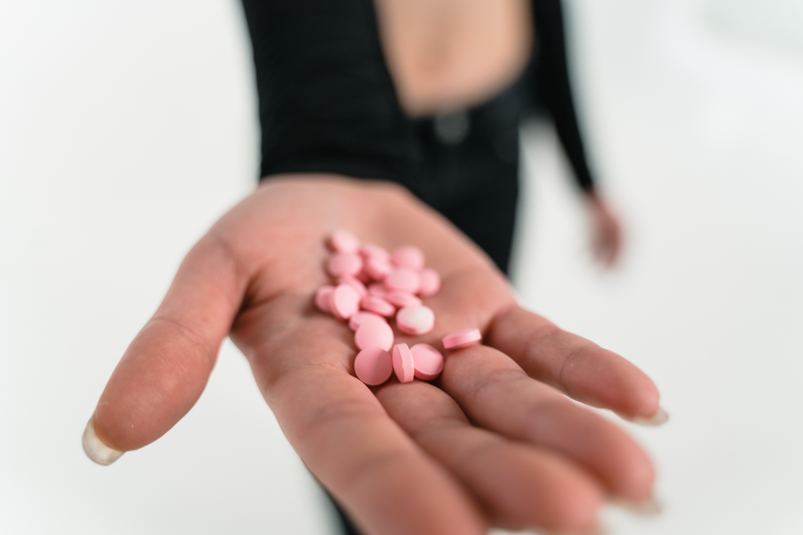
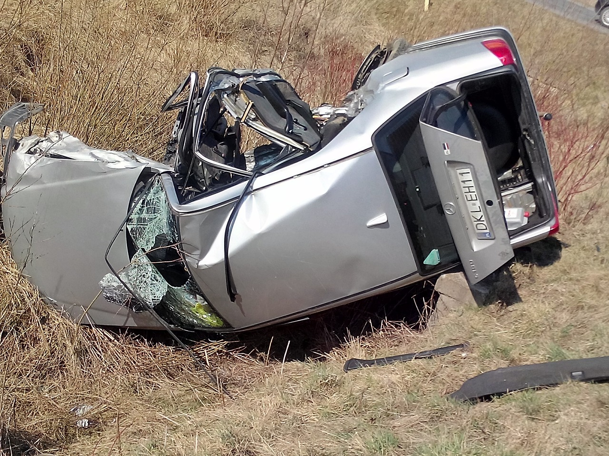

Toma buenas decisiones
Juego Interactivo para adolescentes
Ver GAMEPLAYJuego Interactivo para niños
JUGARGuías para padres
Si eres papá o mamá cuida a tus hijos
Alcohol y drogas
Este programa se enfoca en empoderar a los padres con información, estrategias y recursos para prevenir el consumo de sustancias en sus hijos adolescentes. Además, destaca la importancia de la comunicación abierta y efectiva en el proceso de prevención. La colaboración entre la policía y los padres puede ser fundamental para crear comunidades más seguras y saludables.
PDF de la GUIAPishing
Diseñar un programa de capacitación para padres de familia por parte de la policía sobre el riesgo de que sus hijos adolescentes estén involucrados en el phishing es una excelente forma de educar a los padres sobre los peligros en línea y cómo proteger a sus hijos. El phishing es una amenaza creciente en la era digital, y es importante que los padres estén informados sobre cómo prevenirlo y proteger a sus hijos.
PDF de la GUIACuting
El programa de capacitación para padres de familia por parte de la policía sobre el autolesionismo o cutting es una iniciativa importante para educar a los padres sobre los riesgos y cómo abordar esta problemática en sus hijos adolescentes.
PDF de la GUIASexting
Un programa de capacitación de una sola sesión para padres de familia, proporcionado por la policía, sobre el sexting (el envío de mensajes sexuales, imágenes o videos a través de dispositivos electrónicos) puede ayudar a los padres a comprender los riesgos asociados y cómo abordar el tema con sus hijos adolescentes. También enfatiza la importancia de la prevención y la comunicación abierta en la familia.
PDF de la GUIAViolencia
Este programa proporciona información y estrategias prácticas para los padres, permitiéndoles abordar la violencia de manera efectiva y apoyar a sus adolescentes. También enfatiza la importancia de la prevención y la comunicación abierta en la familia.
PDF de la GUIASeguridad vial
Esta sesión de capacitación debe enfatizar la importancia de un enfoque continuo en la seguridad vial y la comunicación abierta con los adolescentes a medida que adquieren experiencia en la conducción y respete las normas viales.
PDF de la GUIAGuias para la comunidad
Unidos, con información y solidaridad, podemos enfrentar y superar desafíos como la seguridad vial, adicciones y delitos sociales.
Violencia
Esta guía aborda la prevención y manejo de la violencia en nuestra comunidad. Proporciona herramientas para identificar señales de riesgo, fomenta la comunicación efectiva y promueve estrategias de intervención y apoyo mutuo. Juntos, nos comprometemos a construir un entorno más seguro y solidario para todos.
Alcohol y drogas
Esta guía comunitaria sobre alcohol y drogas busca educar y concienciar sobre sus riesgos. Ofrece recursos para prevención, identificación de problemas y vías de apoyo. Unimos esfuerzos para promover estilos de vida saludables y seguros en nuestra comunidad.

Trata y tráfico de personas
Esta guía comunitaria se enfoca en la prevención y concienciación sobre la trata y tráfico de personas. Brinda información clave para reconocer y actuar ante estas situaciones, promoviendo una comunidad vigilante y protectora. Juntos, podemos combatir este grave delito y proteger a los más vulnerables.
Seguridad vial
Esta guía proporciona herramientas esenciales para mejorar la seguridad vial en nuestra comunidad. Ofrece consejos prácticos sobre conducción segura, respeto a las señales de tráfico y protección de peatones, buscando reducir accidentes y fomentar un entorno vial responsable y seguro para todos.

Guias de Enseñanza
Para servidores público policiales
La prevención social policial desempeña un papel fundamental en la construcción de comunidades seguras y en la reducción de violencia y delincuencia, la guía metodológica está diseñada para brindar a los servidores públicos policiales una ruta efectiva para implementar estrategias de prevención que promuevan la seguridad, la confianza y el bienestar en el ámbito educativo, familiar y comunitario.
Guia para niños
-
Alcohol y drogas
Un programa de educación sobre los riesgos del consumo de alcohol y drogas para niños de 6 a 10 años puede ser un desafío, pero es posible si se planifica de manera efectiva y se enfoca en los conceptos clave.
PDF de la GUIA -
Acoso escolar
Un programa de educación sobre los riesgos del acoso escolar adaptado a niños debe estar basado en un enfoque interactivo y educativo.
PDF de la GUIA -
Acoso sexual
Un programa de capacitación policial para niños sobre el acoso sexual debe caracterizarse por ser, informativo y adecuado para la edad.
PDF de la GUIA -
Trata y tráfico
Un programa de educación sobre los riesgos del tráfico y la trata de personas adaptado para niños, debe ser informativo y a la vez accesible para este grupo de edad.
PDF de la GUIA -
Violencia
"Jugando y Viviendo en Paz"
PDF de la GUIA -
Seguridad vial
Un programa de educación sobre seguridad vial adaptado a niños, pero es posible si se enfoca en los conceptos clave y se utiliza un enfoque interactivo y educativo.
PDF de la GUIA
Guia para adolescentes
-
Alcohol y drogas
Un programa de capacitación para adolescentes respecto al riesgo del consumo de alcohol y drogas son esenciales para proporcionar información, habilidades y apoyo que les ayuden a tomar decisiones saludables, debe centrarse en los conceptos clave relacionados con el riesgo del consumo de alcohol y drogas:
PDF de la GUIA -
Acoso escolar
Un programa de capacitación sobre el riesgo del acoso escolar (bullying) en una sola sesión para adolescentes debe proporcionar información clave y herramientas para prevenir y abordar el acoso.
PDF de la GUIA -
Cuting
La autolesión, como el cutting (cortarse a sí mismo), es un tema delicado que debe abordarse con sensibilidad y cuidado, es importante centrarse en la concienciación, la comprensión y el apoyo.
PDF de la GUIA -
Pishing
Para la capacitación para adolescentes sobre el riesgo de phishing, es importante cubrir temas clave relacionados con la seguridad en línea y cómo protegerse contra estafas en línea.
PDF de la GUIA -
Sexting
En un programa de capacitación para adolescentes sobre los riesgos del sexting es esencial para educar a los jóvenes sobre este tema delicado y garantizar que tomen decisiones informadas y responsables en línea. La educación sobre el sexting responsable y seguro es esencial para empoderar a los adolescentes y proteger su privacidad en línea.
PDF de la GUIA -
Violencia
La capacitación en Violencia es fundamental promover la participación activa, el diálogo abierto y un ambiente seguro para que los adolescentes compartan sus experiencias y preocupaciones. La prevención de la violencia requiere un enfoque integral que involucre a familias, escuelas, comunidades y otros
PDF de la GUIA -
Seguridad vial
Un programa de capacitación para adolescentes sobre seguridad vial debe abordar una variedad de temas para que los jóvenes comprendan la importancia de comportarse de manera segura en las vías.
PDF de la GUIA -
Pandillas
Un programa de capacitación para adolescentes sobre el riesgo de pertenecer a pandillas juveniles debe abordar una serie de temas importantes para concienciar a los jóvenes sobre las implicaciones negativas de involucrarse en pandillas y ofrecer alternativas saludables.:
PDF de la GUIA
Guia para padres
-
Alcohol y drogas
Este programa se enfoca en empoderar a los padres con información, estrategias y recursos para prevenir el consumo de sustancias en sus hijos adolescentes. Además, destaca la importancia de la comunicación abierta y efectiva en el proceso de prevención. La colaboración entre la policía y los padres puede ser fundamental para crear comunidades más seguras y saludables.
-
Violencia
Este programa proporciona información y estrategias prácticas para los padres, permitiéndoles abordar la violencia de manera efectiva y apoyar a sus adolescentes. También enfatiza la importancia de la prevención y la comunicación abierta en la familia.
-
Educación vial
Esta sesión de capacitación debe enfatizar la importancia de un enfoque continuo en la seguridad vial y la comunicación abierta con los adolescentes a medida que adquieren experiencia en la conducción y respete las normas viales.
Guia para la comunidad
-
Alcohol y drogas
Esta guía comunitaria sobre alcohol y drogas busca educar y concienciar sobre sus riesgos. Ofrece recursos para prevención, identificación de problemas y vías de apoyo. Unimos esfuerzos para promover estilos de vida saludables y seguros en nuestra comunidad.
-
Violencia
Esta guía aborda la prevención y manejo de la violencia en nuestra comunidad. Proporciona herramientas para identificar señales de riesgo, fomenta la comunicación efectiva y promueve estrategias de intervención y apoyo mutuo. Juntos, nos comprometemos a construir un entorno más seguro y solidario para todos.
-
Educación vial
Esta guía proporciona herramientas esenciales para mejorar la seguridad vial en nuestra comunidad. Ofrece consejos prácticos sobre conducción segura, respeto a las señales de tráfico y protección de peatones, buscando reducir accidentes y fomentar un entorno vial responsable y seguro para todos.
Vecino Vigilante
Vecino, cuida tu familia, cuida tu barrio
Ubicación del hecho:
Zona Satélite, Mercado San José
Correo:
episatelite@gmail.com
Teléfono:
911
Contenido de prevención


{kind=link}
{kind=link}
{kind=link}
{kind=link}
Preguntas frecuentes sobre la delincuencia
Institucional
Información sobre la historia, misión, visión y valores de la Estación Policial Integral "Satélite".
Misión
At vero eos et accusamus et iusto odio dignissimos ducimus qui blanditiis praesentium voluptatum deleniti atque
Visión
Explicabo est voluptatum asperiores consequatur magnam. Et veritatis odit. Sunt aut deserunt minus aut eligendi omnis
Valores
Explicabo est voluptatum asperiores consequatur magnam. Et veritatis odit. Sunt aut deserunt minus aut eligendi omnis